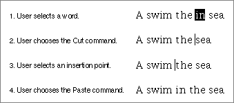
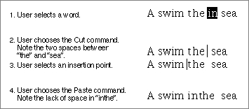

Intelligent Cut and Paste
When the user selects text and then chooses the Cut command, or sets the insertion point and then chooses Paste, your application should apply "intelligent cut and paste," that is, discard extra spaces or add spaces, as outlined here. In general, your application should follow these rules to provide intelligent cut and paste:Figure 2-4 shows examples of intelligent cut and paste.
- If the user selects a word or range of words, highlight the selection but not any adjacent spaces.
- When the user chooses the Cut command, if the character to the left of the selection is a space, discard it. Otherwise, if the character to the right of the selection is a space, discard it.
- When the user chooses the Paste command, if the character to the left or right of the current selection or if the character to the left or right of the insertion point is part of a word, insert a space before pasting the text.
Figure 2-4 Intelligent cut and paste

Figure 2-5 shows the results of applying the same operations in an application that doesn't support intelligent cut and paste.Figure 2-5 Non-intelligent cut and paste

See Macintosh Human Interface Guidelines for details of selection techniques and guidelines for selecting words and paragraphs.